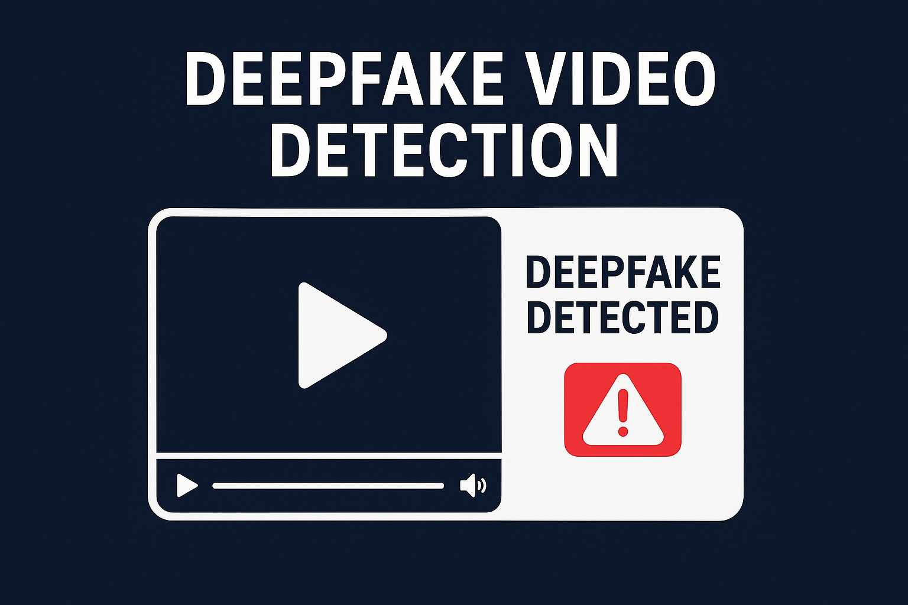
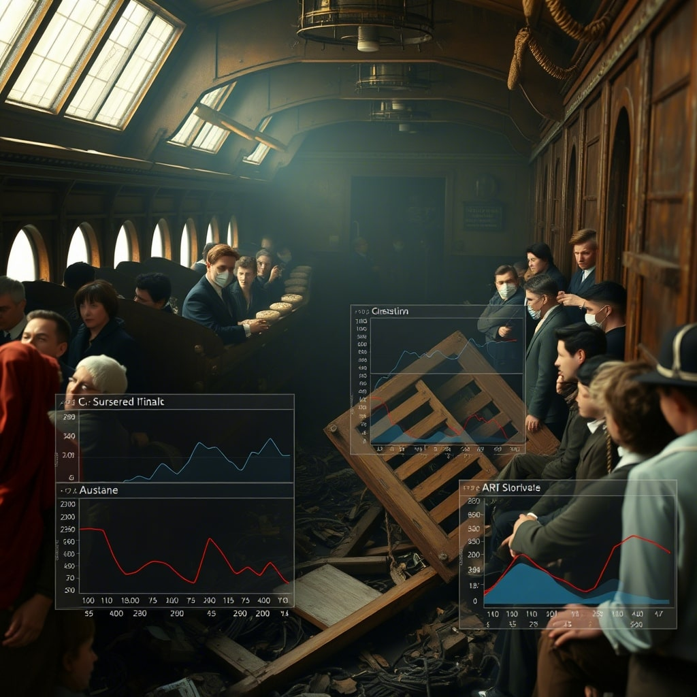

Building systems that measure what matters.
I design and ship machine learning and computer vision systems — fraud detectors, career-matching engines, diagnostic classifiers — for clients and research projects alike. Every build ships with a number attached to it.
From research paper to production.
I'm a B.Sc. Artificial Intelligence & Machine Learning graduate and the founder of IGNIQ Solutions, an independent AI/ML freelance practice. My work spans computer vision, NLP, and full-stack delivery — from a peer-reviewed deepfake detection model to production classifiers and client-facing web platforms.
I care about the gap between a model that works in a notebook and a system that holds up in front of real users — which is why almost everything I build gets measured, from ROC curves to page-load times.
AI & ML Engineering
NLP & Computer Vision
Product & Deployment
Internships and applied work.
AI Developer
- Built and integrated AI-powered modules into production application workflows, working directly with the engineering team on model logic and feature behavior.
- Supported validation and QA of AI features, documenting model behavior and edge cases for reliable handoff.
AI/ML Research Intern
- Prototyped deep learning and computer vision solutions using PyTorch and OpenCV for real-world tasks.
- Improved baseline model accuracy by 12% through hyperparameter tuning and architecture experiments.
- Produced weekly research documentation and technical walkthroughs for the engineering team.
Machine Learning Intern
- Trained image classification and predictive ML models using Python and scikit-learn.
- Built scalable data preprocessing pipelines, reducing training preparation time by 30%.
- Deployed models through Flask REST APIs for real-time inference.
Full-Stack Development Intern
- Built FastAPI backends and data visualization dashboards integrating AI model outputs.
- Optimized MongoDB queries and introduced caching, reducing API latency by 25%.
- Delivered production-ready APIs and frontend integrations for internal tools.
Projects, from model to interface.
Independent builds across ML, computer vision, NLP, and robotics — each shipped with a working demo, not just a notebook. Client work for IGNIQ Solutions lives in the Freelance section below.

Deepfake Video Detection
Detects face-swap deepfakes using frame-level CNN features and temporal consistency checks, tuned to reduce false positives in low-light, compression-heavy video.

Aura Derm — AI Skincare Advisor
Detects facial skin concerns from a curated dermatology image set and recommends products and diet suggestions, with condition-wise confidence scoring.

Hand Speak
Converts hand gestures into real-time text and voice output from live camera input, with preprocessing and frame sampling tuned for smoother camera-to-output performance.
Celeste Map
Privacy-first cybersecurity awareness app that analyzes public VPN/Tor exit node data, scores risk, and visualizes patterns on interactive maps and dashboards — with education modules on safe browsing and dark-web threat awareness.

Mini Humanoid Robot
Arduino-based robot with sensor-driven obstacle response and gesture-like robotic arm routines, combining distance sensing, motor commands, and stability checks in real time.

Crypto Insight
Full-stack cryptocurrency analytics platform with live price tracking, USD-to-INR conversion, and NLP-based sentiment analysis across 10 cryptocurrencies.
SmartDevTool
AI-powered developer assistant that turns API documentation into implementation-ready integrations within seconds, cutting the time spent reading docs and wiring up new APIs by hand.
AI Career Copilot
AI-powered job application assistant combining resume optimization, job matching, and an intelligent decision engine to help candidates apply with a stronger, more targeted fit.

Titanic Survival Prediction
Machine learning classification model predicting passenger survival from historical Titanic passenger data features.
IGNIQ Solutions.
I'm the founder of IGNIQ Solutions, where I scope, build, and deliver AI-driven and web-based products for early-stage teams, student founders, and local businesses — from first client call to deployed prototype.
Aura — Women's Health Assistant
A cycle-tracking and wellness assistant with scikit-learn cycle prediction, KMeans clustering for pattern insights, PDF report export, and scheduled notifications.
Fake Job Posting Detection
Trained on the real EMSCAD dataset with a Logistic Regression fraud classifier and Flask UI, quoted and delivered as a client-ready prototype.
Intelligent Resource Allocation
A workforce-matching system pairing staff to roles with an AI matcher and analytics dashboard, surfacing match quality through a radial dial score component.
Career GPS
Prepared for client handover as a Streamlit-based career readiness mentor, with account data cleared and repository hygiene fixed ahead of transfer.
Published work.
Deepfake Detection Using Deep Learning
- Achieved 94.2% benchmark accuracy on FaceForensics++ using CNN feature extraction and temporal consistency analysis.
- Documented model architecture, dataset curation, and facial landmark tracking methodology with a reproducible experiment setup.
Notes worth flagging.
- HackOverFlow Hackathon participant, CultRang '26 — built and pitched an NLP-powered AI solution in 24 hours.
- Co-authored an undergraduate research paper on deepfake detection with 94.2% benchmark accuracy.
- Completed four internships across AI research, ML engineering, full-stack development, and AI development.
- Built Career GPS end-to-end, from idea to working GenAI-guided prototype.
Google Cloud
Google Gen AI Academy — APAC Edition
Hands-on labs in practical GenAI engineering workflows.
- MCP workflows and agent integration patterns
- ADK-based prototyping and orchestration
- Vertex AI and A2A lab workflows on Google Cloud
Foundation.
B.Sc. Artificial Intelligence and Machine Learning
Higher Secondary (HSC)
Let's build something measurable.
Open to internships, collaborations, and AI project work.